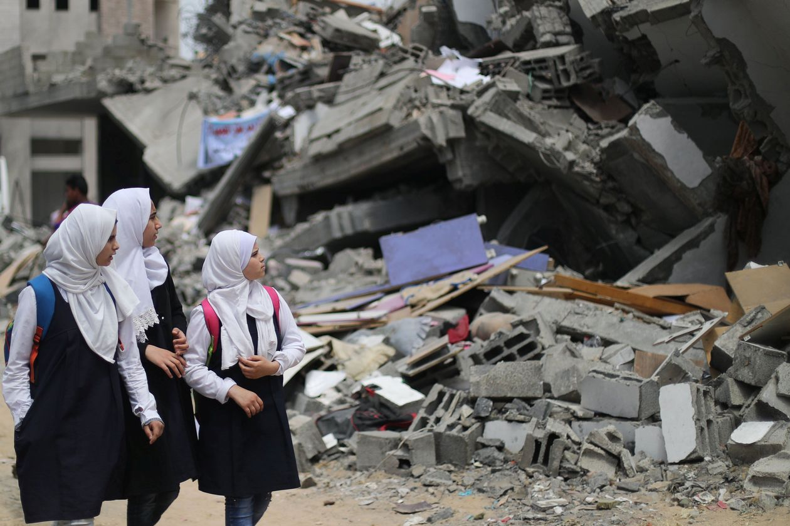
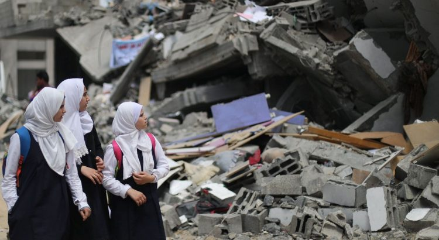
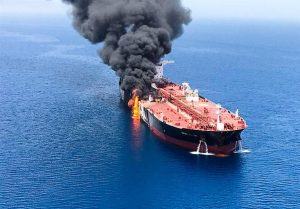

Violence Escalates in Southern Israel – War Started Again

After a short period of peace enjoyed by Israeli and Palestinians living in Gaza the war has started up again.The Cease Fire took affect on May 6 after a two day war where 700 missiles were fired from Gaza to Israel mostly intercepted by the Israel Iron dome, but several missiles did succeed to do damage and kill or injure Israelis.
Israel retaliated, striking military and political targets in Gaza, killing 23 Palestinians and injuring others.Egypt and Qatar succeeded to bring the two sides to a cease fire.
After the cease fire Qatar donated a large sum of $480 million to the Palestianians in the West Bank and to Gaza.
Israel as part of the cease fire agreement agreed to extend the borders of the areas of the sea used by the Gazans for their fish industry.There were several small skirmishes after May 6 mostly by fire balloons flown into Israel causing fires and skirmishes at the borders from demonstrations.
Israel refrained from retaliating but would react through limiting the size of the fishing areas in response.This occurred several times from May 6 until today June 14.Israel would limit these areas for several days and then again open these borders for fishing rights.
On June 12 saw the first rocket fired from Gaza into Israel since the ceasefire.Israel responded through bombing some military locations in Gaza.On June 14 a rocket was fired from Gaza into Israel damaging a building in the border city of Sederot.Israel again retaliated through bombing military and political targets in Gaza.
This has occurred in conjunction with the escalation yesterday in the Hormuz Straits where two ships were damaged by suspicious objects in the sea.Iran denied responsibility for these attacks.There seems to be a relation between the escalation yesterday in Gaza and the escalation in the Hormuz straits.Time will tell if these events are leading to war in the area.
[bsa_pro_ad_space id=4]
Posted On: 2019-06-14T00:00:00
Posted By: David Wexelman





Content Date: 2019-06-14
Download Date: 2021-07-09
Document ID: L0C04E8QJ